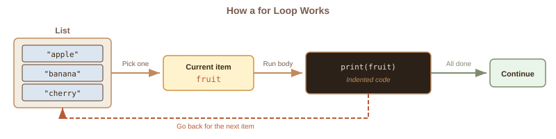
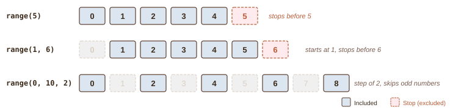
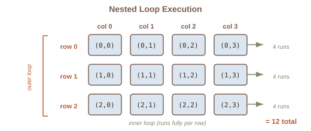

Week 8: For Loops
CSC-125-201 · Spring 2026
CSC-125-201 · Spring 2026
| # | Section |
|---|---|
| 1 | Week 7 Review |
| 2 | Lecture Slides |
| - | Break |
| 3 | Code Lecture |
This week: we teach the computer to repeat work automatically.
Imagine you are a teacher printing certificates for 30 students. Without automation, you write each name by hand, one at a time. What about 1,000 students?
We need a way to say: "do this once for every item." That is exactly what a for loop does. It is the single most useful tool for working with lists.
Think of a conveyor belt in a factory. Items travel down the belt one at a time. A worker performs the same action on each one. When the belt is empty, the work stops.

The list is the belt, the loop body is the worker, and the loop variable holds whichever item is currently being processed.
Every for loop has three parts: the keyword for, a loop variable that holds the current item, and the sequence to iterate through. The colon and indentation work just like if statements.
for name in names:
print(f"Hello, {name}")One of the most common loop patterns: start with an empty bag and drop items into it as you go. Each trip through the loop adds one item to the result.
This replaces the manual, item-by-item approach from Week 7. Instead of writing .append() once per item, the loop does it automatically for every item in the source list, no matter how large.
with_tax = []
for price in prices:
with_tax.append(price * 1.08)Sometimes you need to count rather than iterate through a list. range() is like a number dispenser at a deli counter: it hands out numbers one at a time. It has three forms.

Key rule: range stops before the stop number. To include 5, write range(1, 6).
Direct iteration (for item in list) gives you the value but not its location. Sometimes you need to know where an item sits, or you need to change the original list. That is when you use range(len(list)) to loop through indices instead.
Rule of thumb: use direct iteration unless you specifically need the index number.
A string is a sequence of characters, just like a list is a sequence of items. A for loop walks through each character one at a time. This connects back to Week 3 (string operations) and Week 5 (conditionals).
Anywhere you have been manually indexing characters one by one, a loop can do it for you automatically.
Think of a cash register. You start at $0.00. Each item scanned adds to the running total. At the end, the register shows the sum of everything. The same logic works in code.
The same structure works for counting: start at 0, add 1 each time a condition is true. Both patterns follow the "accumulator" idea: build up a result one step at a time.
Counting is like a bouncer with a clicker at the door. Start at 0, click once for each person who meets the criteria. Filtering is like sorting mail into piles: one pile for keepers, and the rest is discarded.
Both patterns combine loops with the conditionals you learned in Week 5.
A nested loop is a loop inside another loop. Think of a spreadsheet: the outer loop picks the row, and the inner loop walks across every column in that row before moving to the next one.

The inner loop runs completely for each step of the outer loop.
Available on Moodle, due Monday 11:59 PM.
This week: practice for loops, range(), and common loop patterns.
Reference sheet posted on Moodle to help with the assignment.
Next week (Week 9): While Loops & Advanced Debugging - Virtual + Forum